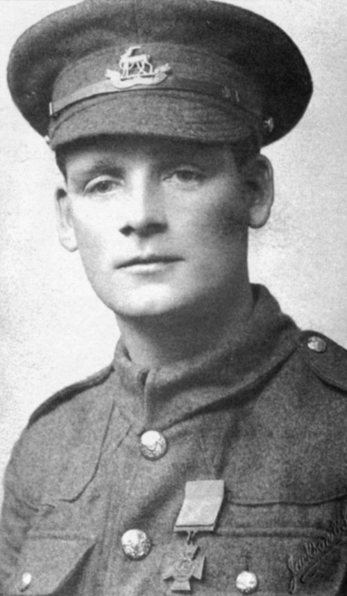
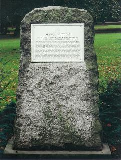

Arthur Hutt VC Arthur Hutt VC was the first person from Coventry to win a Victoria Cross, the highest and most prestigious award for gallantry in the face of the enemy that can be awarded to British and Commonwealth forces. Arthur was born in Earlsdon on 12 February 1889. He was a textile worker in civilian life and when the factory he worked for formed a company (called a “Pals” unit) in the Warwickshire Territorials (a militia unit), Hutt joined up. When war broke out, he was mustered into the 1/7th Battalion of The Royal Warwickshire Regiment. His unit saw action during the Battle of the Somme and the Ypres Salient, then Italy, then back to Ypres. Hutt was awarded the VC for action at a position called Terrier Farm, southeast of Poelcapelle, Belgium, during the Third Battle of Ypres (Passchendaele), October 4, 1917. From his citation: On 4th October, 1917, during the attack by the 48th Division before St.Julien, the 7th Battalion had as their objective Tweed House. "A" Company captured their first objective but when they continued their advance, all the officers and non-commissioned officers in private Hutt's platoon were hit. Private Hutt thereupon took command and led forward the platoon. He was held up by a strong point on his right, but immediately ran forward alone, shot the officer and three men in the post, and caused forty or fifty others to surrender. Presently realising that he had pushed too far ahead, Hutt withdrew his party. He personally covered the withdrawal, sniping the enemy and killing a number of them. Then he carried back a comrade, who had been badly wounded, and put him under shelter. After he had organised and consolidated his position, he learnt that some wounded men still lay out in the open, where they were likely to be taken prisoners. As no stretcher bearers were available, Hutt went out himself and carried in four men under heavy fire. He held his post until relieved on 7/8 Oct ." He died on 14 April, 1964, at his brother's home in Sewell Highway and was cremated at Canley Crematorium with full military honours. A year later, on Sunday, April 17, 1965, a Cornish granite memorial was erected in his memory in War Memorial Park.  |